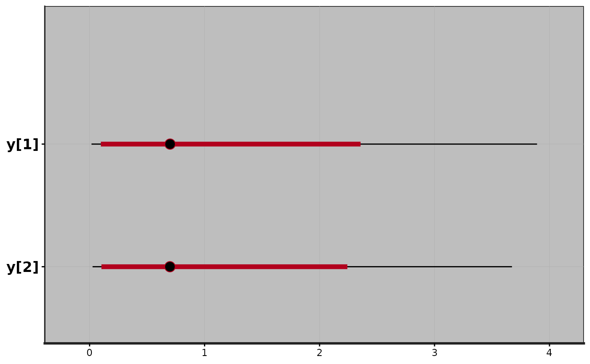
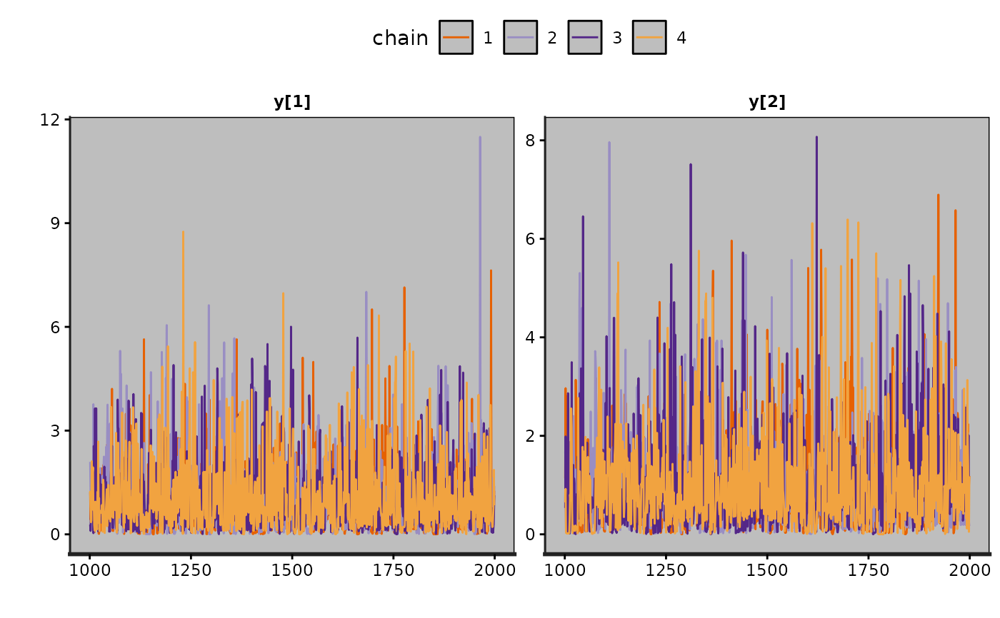
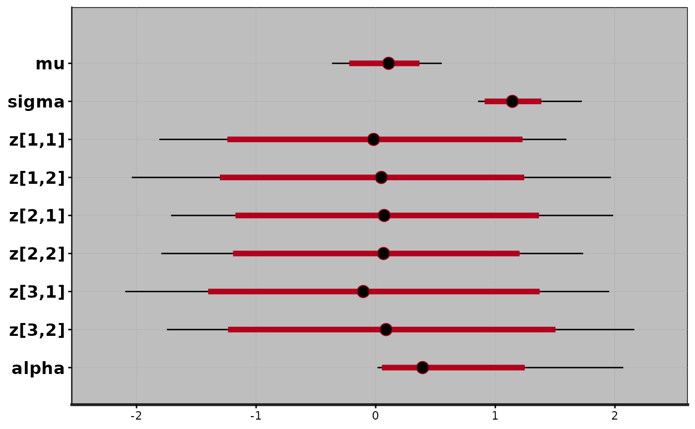

Class stanfit: fitted Stan model
stanfit-class.RdThe components (slots) of a stanfit object and the various available
methods are described below. When methods have their own more detailed
documentation pages links are provided.
Objects from the Class
An object of class stanfit contains the
output derived from fitting a Stan model as returned by the top-level function
stan or the lower-level methods sampling and
vb (which are defined on class stanmodel).
Many methods (e.g., print, plot, summary) are provided for
summarizing results and various access methods also allow the underlying data
(e.g., simulations, diagnostics) contained in the object to be retrieved.
Slots
model_name:The model name as a string.
model_pars:A character vector of names of parameters (including transformed parameters and derived quantities).
par_dims:A named list giving the dimensions for all parameters. The dimension for a scalar parameter is given as
numeric(0).mode:An integer indicating the mode of the fitted model.
0indicates sampling mode,1indicates test gradient mode (no sampling is done), and2indicates error mode (an error occurred before sampling). Most methods forstanfitobjects are useful only ifmode=0.sim:A list containing simulation results including the posterior draws as well as various pieces of metadata used by many of the methods for
stanfitobjects.inits:The initial values (either user-specified or generated randomly) for all chains. This is a list with one component per chain. Each component is a named list containing the initial values for each parameter for the corresponding chain.
stan_args:A list with one component per chain containing the arguments used for sampling (e.g.
iter,seed, etc.).stanmodel:The instance of S4 class
stanmodel.date:A string containing the date and time the object was created.
.MISC:Miscellaneous helper information used for the fitted model. This is an object of type
environment. Users rarely (if ever) need to access the contents of.MISC.
Methods
Printing, plotting, and summarizing:
showPrint the default summary for the model.
printPrint a customizable summary for the model. See
print.stanfit.plotCreate various plots summarizing the fitted model. See
plot,stanfit-method.summarySummarize the distributions of estimated parameters and derived quantities using the posterior draws. See
summary,stanfit-method.get_posterior_meanGet the posterior mean for parameters of interest (using
parsto specify a subset of parameters). Returned is a matrix with one column per chain and an additional column for all chains combined.
Extracting posterior draws:
extractExtract the draws for all chains for all (or specified) parameters. See
extract.as.array,as.matrix,as.data.frameCoerce the draws (without warmup) to an array, matrix or data frame. See
as.array.stanfit.As.mcmc.listConvert a
stanfitobject to anmcmc.listas in package coda. SeeAs.mcmc.list.get_logposteriorGet the log-posterior at each iteration. Each element of the returned
listis the vector of log-posterior values (up to an additive constant, i.e. up to a multiplicative constant on the linear scale) for a single chain. The optional argumentinc_warmup(defaulting toTRUE) indicates whether to include the warmup period.
Diagnostics, log probability, and gradients:
get_sampler_paramsObtain the parameters used for the sampler such as
stepsizeandtreedepth. The results are returned as a list with one component (an array) per chain. The array has number of columns corresponding to the number of parameters used in the sampler and its column names provide the parameter names. Optional argumentinc_warmup(defaulting toTRUE) indicates whether to include the warmup period.get_adaptation_infoObtain the adaptation information for the sampler if NUTS was used. The results are returned as a list, each element of which is a character string with the info for a single chain.
log_probCompute the log probability density (
lp__) for a set of parameter values (on the unconstrained space) up to an additive constant. The unconstrained parameters are specified using a numeric vector. The number of parameters on the unconstrained space can be obtained using methodget_num_upars. A numeric value is returned. See also the documentation inlog_prob.grad_log_probCompute the gradient of log probability density function for a set of parameter values (on the unconstrained space) up to an additive constant. The unconstrained parameters are specified using a numeric vector with the length being the number of unconstrained parameters. A numeric vector is returned with the length of the number of unconstrained parameters and an attribute named
log_probbeing thelp__. See also the documentation ingrad_log_prob.get_num_uparsGet the number of unconstrained parameters of the model. The number of parameters for a model is not necessarily equal to this number of unconstrained parameters. For example, when a parameter is specified as a simplex of length K, the number of unconstrained parameters is K-1.
unconstrain_parsTransform the parameters to unconstrained space. The input is a named list as for specifying initial values for each parameter. A numeric vector is returned. See also the documentation in
unconstrain_pars.constrain_parsGet the parameter values from their unconstrained space. The input is a numeric vector. A list is returned. This function is contrary to
unconstrain_pars. See also the documentation inconstrain_pars.
Metadata and miscellaneous:
get_stancodeGet the Stan code for the fitted model as a string. The result can be printed in a readable format using
cat.get_stanmodelGet the object of S4 class
stanmodelof the fitted model.get_elapsed_timeGet the warmup time and sample time in seconds. A matrix of two columns is returned with each row containing the warmup and sample times for one chain.
get_inits, iter = NULLGet the initial values for parameters used in sampling all chains. The returned object is a list with the same structure as the
initsslot described above. Ifobject@mode=2(error mode) an empty list is returned. Ifiteris notNULL, then the draw from that iteration is returned for each chain rather than the initial state.get_cppo_modeGet the optimization mode used for compilation. The returned string is one of
"fast","presentation2","presentation1", and"debug".get_seedGet the (P)RNG seed used. When the fitted object is empty (
mode=2),NULLmight be returned. In the case that the seeds for all chains are different, useget_seeds.get_seedsGet the seeds used for all chains. When the fitted object is empty (
mode=2),NULLmight be returned.
References
The Stan Development Team Stan Modeling Language User's Guide and Reference Manual. https://mc-stan.org.
Examples
# \dontrun{
showClass("stanfit")
#> Class "stanfit" [package "rstan"]
#>
#> Slots:
#>
#> Name: model_name model_pars par_dims mode sim inits
#> Class: character character list integer list list
#>
#> Name: stan_args stanmodel date .MISC
#> Class: list stanmodel character environment
ecode <- '
parameters {
array[2] real<lower=0> y;
}
model {
y ~ exponential(1);
}
'
fit <- stan(model_code = ecode, iter = 10, chains = 1)
#>
#> SAMPLING FOR MODEL 'anon_model' NOW (CHAIN 1).
#> Chain 1:
#> Chain 1: Gradient evaluation took 3e-06 seconds
#> Chain 1: 1000 transitions using 10 leapfrog steps per transition would take 0.03 seconds.
#> Chain 1: Adjust your expectations accordingly!
#> Chain 1:
#> Chain 1:
#> Chain 1: WARNING: No variance estimation is
#> Chain 1: performed for num_warmup < 20
#> Chain 1:
#> Chain 1: Iteration: 1 / 10 [ 10%] (Warmup)
#> Chain 1: Iteration: 2 / 10 [ 20%] (Warmup)
#> Chain 1: Iteration: 3 / 10 [ 30%] (Warmup)
#> Chain 1: Iteration: 4 / 10 [ 40%] (Warmup)
#> Chain 1: Iteration: 5 / 10 [ 50%] (Warmup)
#> Chain 1: Iteration: 6 / 10 [ 60%] (Sampling)
#> Chain 1: Iteration: 7 / 10 [ 70%] (Sampling)
#> Chain 1: Iteration: 8 / 10 [ 80%] (Sampling)
#> Chain 1: Iteration: 9 / 10 [ 90%] (Sampling)
#> Chain 1: Iteration: 10 / 10 [100%] (Sampling)
#> Chain 1:
#> Chain 1: Elapsed Time: 0 seconds (Warm-up)
#> Chain 1: 0 seconds (Sampling)
#> Chain 1: 0 seconds (Total)
#> Chain 1:
#> Warning: The largest R-hat is 1.9, indicating chains have not mixed.
#> Running the chains for more iterations may help. See
#> https://mc-stan.org/misc/warnings.html#r-hat
fit2 <- stan(fit = fit)
#>
#> SAMPLING FOR MODEL 'anon_model' NOW (CHAIN 1).
#> Chain 1:
#> Chain 1: Gradient evaluation took 1e-06 seconds
#> Chain 1: 1000 transitions using 10 leapfrog steps per transition would take 0.01 seconds.
#> Chain 1: Adjust your expectations accordingly!
#> Chain 1:
#> Chain 1:
#> Chain 1: Iteration: 1 / 2000 [ 0%] (Warmup)
#> Chain 1: Iteration: 200 / 2000 [ 10%] (Warmup)
#> Chain 1: Iteration: 400 / 2000 [ 20%] (Warmup)
#> Chain 1: Iteration: 600 / 2000 [ 30%] (Warmup)
#> Chain 1: Iteration: 800 / 2000 [ 40%] (Warmup)
#> Chain 1: Iteration: 1000 / 2000 [ 50%] (Warmup)
#> Chain 1: Iteration: 1001 / 2000 [ 50%] (Sampling)
#> Chain 1: Iteration: 1200 / 2000 [ 60%] (Sampling)
#> Chain 1: Iteration: 1400 / 2000 [ 70%] (Sampling)
#> Chain 1: Iteration: 1600 / 2000 [ 80%] (Sampling)
#> Chain 1: Iteration: 1800 / 2000 [ 90%] (Sampling)
#> Chain 1: Iteration: 2000 / 2000 [100%] (Sampling)
#> Chain 1:
#> Chain 1: Elapsed Time: 0.006 seconds (Warm-up)
#> Chain 1: 0.005 seconds (Sampling)
#> Chain 1: 0.011 seconds (Total)
#> Chain 1:
#>
#> SAMPLING FOR MODEL 'anon_model' NOW (CHAIN 2).
#> Chain 2:
#> Chain 2: Gradient evaluation took 1e-06 seconds
#> Chain 2: 1000 transitions using 10 leapfrog steps per transition would take 0.01 seconds.
#> Chain 2: Adjust your expectations accordingly!
#> Chain 2:
#> Chain 2:
#> Chain 2: Iteration: 1 / 2000 [ 0%] (Warmup)
#> Chain 2: Iteration: 200 / 2000 [ 10%] (Warmup)
#> Chain 2: Iteration: 400 / 2000 [ 20%] (Warmup)
#> Chain 2: Iteration: 600 / 2000 [ 30%] (Warmup)
#> Chain 2: Iteration: 800 / 2000 [ 40%] (Warmup)
#> Chain 2: Iteration: 1000 / 2000 [ 50%] (Warmup)
#> Chain 2: Iteration: 1001 / 2000 [ 50%] (Sampling)
#> Chain 2: Iteration: 1200 / 2000 [ 60%] (Sampling)
#> Chain 2: Iteration: 1400 / 2000 [ 70%] (Sampling)
#> Chain 2: Iteration: 1600 / 2000 [ 80%] (Sampling)
#> Chain 2: Iteration: 1800 / 2000 [ 90%] (Sampling)
#> Chain 2: Iteration: 2000 / 2000 [100%] (Sampling)
#> Chain 2:
#> Chain 2: Elapsed Time: 0.006 seconds (Warm-up)
#> Chain 2: 0.006 seconds (Sampling)
#> Chain 2: 0.012 seconds (Total)
#> Chain 2:
#>
#> SAMPLING FOR MODEL 'anon_model' NOW (CHAIN 3).
#> Chain 3:
#> Chain 3: Gradient evaluation took 1e-06 seconds
#> Chain 3: 1000 transitions using 10 leapfrog steps per transition would take 0.01 seconds.
#> Chain 3: Adjust your expectations accordingly!
#> Chain 3:
#> Chain 3:
#> Chain 3: Iteration: 1 / 2000 [ 0%] (Warmup)
#> Chain 3: Iteration: 200 / 2000 [ 10%] (Warmup)
#> Chain 3: Iteration: 400 / 2000 [ 20%] (Warmup)
#> Chain 3: Iteration: 600 / 2000 [ 30%] (Warmup)
#> Chain 3: Iteration: 800 / 2000 [ 40%] (Warmup)
#> Chain 3: Iteration: 1000 / 2000 [ 50%] (Warmup)
#> Chain 3: Iteration: 1001 / 2000 [ 50%] (Sampling)
#> Chain 3: Iteration: 1200 / 2000 [ 60%] (Sampling)
#> Chain 3: Iteration: 1400 / 2000 [ 70%] (Sampling)
#> Chain 3: Iteration: 1600 / 2000 [ 80%] (Sampling)
#> Chain 3: Iteration: 1800 / 2000 [ 90%] (Sampling)
#> Chain 3: Iteration: 2000 / 2000 [100%] (Sampling)
#> Chain 3:
#> Chain 3: Elapsed Time: 0.006 seconds (Warm-up)
#> Chain 3: 0.006 seconds (Sampling)
#> Chain 3: 0.012 seconds (Total)
#> Chain 3:
#>
#> SAMPLING FOR MODEL 'anon_model' NOW (CHAIN 4).
#> Chain 4:
#> Chain 4: Gradient evaluation took 1e-06 seconds
#> Chain 4: 1000 transitions using 10 leapfrog steps per transition would take 0.01 seconds.
#> Chain 4: Adjust your expectations accordingly!
#> Chain 4:
#> Chain 4:
#> Chain 4: Iteration: 1 / 2000 [ 0%] (Warmup)
#> Chain 4: Iteration: 200 / 2000 [ 10%] (Warmup)
#> Chain 4: Iteration: 400 / 2000 [ 20%] (Warmup)
#> Chain 4: Iteration: 600 / 2000 [ 30%] (Warmup)
#> Chain 4: Iteration: 800 / 2000 [ 40%] (Warmup)
#> Chain 4: Iteration: 1000 / 2000 [ 50%] (Warmup)
#> Chain 4: Iteration: 1001 / 2000 [ 50%] (Sampling)
#> Chain 4: Iteration: 1200 / 2000 [ 60%] (Sampling)
#> Chain 4: Iteration: 1400 / 2000 [ 70%] (Sampling)
#> Chain 4: Iteration: 1600 / 2000 [ 80%] (Sampling)
#> Chain 4: Iteration: 1800 / 2000 [ 90%] (Sampling)
#> Chain 4: Iteration: 2000 / 2000 [100%] (Sampling)
#> Chain 4:
#> Chain 4: Elapsed Time: 0.006 seconds (Warm-up)
#> Chain 4: 0.006 seconds (Sampling)
#> Chain 4: 0.012 seconds (Total)
#> Chain 4:
print(fit2)
#> Inference for Stan model: anon_model.
#> 4 chains, each with iter=2000; warmup=1000; thin=1;
#> post-warmup draws per chain=1000, total post-warmup draws=4000.
#>
#> mean se_mean sd 2.5% 25% 50% 75% 97.5% n_eff Rhat
#> y[1] 0.99 0.02 0.96 0.03 0.29 0.70 1.38 3.62 2355 1
#> y[2] 1.03 0.02 1.03 0.02 0.28 0.71 1.45 3.73 2221 1
#> lp__ -3.16 0.04 1.13 -6.24 -3.64 -2.81 -2.32 -2.03 931 1
#>
#> Samples were drawn using NUTS(diag_e) at Sat Jun 13 02:45:15 2026.
#> For each parameter, n_eff is a crude measure of effective sample size,
#> and Rhat is the potential scale reduction factor on split chains (at
#> convergence, Rhat=1).
plot(fit2)
#> ci_level: 0.8 (80% intervals)
#> outer_level: 0.95 (95% intervals)

traceplot(fit2)

ainfo <- get_adaptation_info(fit2)
cat(ainfo[[1]])
#> # Adaptation terminated
#> # Step size = 0.690643
#> # Diagonal elements of inverse mass matrix:
#> # 1.34747, 1.50591
seed <- get_seed(fit2)
sp <- get_sampler_params(fit2)
sp2 <- get_sampler_params(fit2, inc_warmup = FALSE)
head(sp[[1]])
#> accept_stat__ stepsize__ treedepth__ n_leapfrog__ divergent__ energy__
#> [1,] 0.1066173 1.0000000 2 3 0 8.541471
#> [2,] 0.0000000 2.8345670 0 1 1 8.379200
#> [3,] 1.0000000 0.2960130 3 7 0 4.617168
#> [4,] 0.9998809 0.3185794 2 3 0 4.096524
#> [5,] 0.9927056 0.4396810 3 15 0 4.735810
#> [6,] 1.0000000 0.6817650 2 3 0 3.924150
lp <- log_prob(fit, c(1, 2))
grad <- grad_log_prob(fit, c(1, 2))
lp2 <- attr(grad, "log_prob") # should be the same as "lp"
# get the number of parameters on the unconstrained space
n <- get_num_upars(fit)
# parameters on the positive real line (constrained space)
y1 <- list(y = rep(1, 2))
uy <- unconstrain_pars(fit, y1)
## uy should be c(0, 0) since here the log transformation is used
y1star <- constrain_pars(fit, uy)
print(y1)
#> $y
#> [1] 1 1
#>
print(y1star) # y1start should equal to y1
#> $y
#> [1] 1 1
#>
# }
# Create a stanfit object from reading CSV files of samples (saved in rstan
# package) generated by funtion stan for demonstration purpose from model as follows.
#
excode <- '
transformed data {
array[20] real y;
y[1] <- 0.5796; y[2] <- 0.2276; y[3] <- -0.2959;
y[4] <- -0.3742; y[5] <- 0.3885; y[6] <- -2.1585;
y[7] <- 0.7111; y[8] <- 1.4424; y[9] <- 2.5430;
y[10] <- 0.3746; y[11] <- 0.4773; y[12] <- 0.1803;
y[13] <- 0.5215; y[14] <- -1.6044; y[15] <- -0.6703;
y[16] <- 0.9459; y[17] <- -0.382; y[18] <- 0.7619;
y[19] <- 0.1006; y[20] <- -1.7461;
}
parameters {
real mu;
real<lower=0, upper=10> sigma;
vector[2] z[3];
real<lower=0> alpha;
}
model {
y ~ normal(mu, sigma);
for (i in 1:3)
z[i] ~ normal(0, 1);
alpha ~ exponential(2);
}
'
# exfit <- stan(model_code = excode, save_dso = FALSE, iter = 200,
# sample_file = "rstan_doc_ex.csv")
#
exfit <- read_stan_csv(dir(system.file('misc', package = 'rstan'),
pattern='rstan_doc_ex_[[:digit:]].csv',
full.names = TRUE))
print(exfit)
#> Inference for Stan model: rstan_doc_ex.
#> 4 chains, each with iter=200; warmup=100; thin=1;
#> post-warmup draws per chain=100, total post-warmup draws=400.
#>
#> mean se_mean sd 2.5% 25% 50% 75% 97.5% n_eff Rhat
#> mu 0.09 0.01 0.23 -0.38 -0.05 0.11 0.25 0.56 338 1.00
#> sigma 1.16 0.02 0.21 0.86 1.02 1.14 1.28 1.74 186 1.00
#> z[1,1] 0.00 0.05 0.92 -1.81 -0.65 -0.01 0.71 1.59 285 1.01
#> z[1,2] 0.01 0.06 1.03 -2.04 -0.66 0.05 0.67 1.99 270 1.00
#> z[2,1] 0.10 0.05 0.98 -1.71 -0.55 0.08 0.76 1.98 342 1.00
#> z[2,2] 0.04 0.05 0.95 -1.85 -0.68 0.07 0.72 1.73 394 1.00
#> z[3,1] -0.06 0.05 1.07 -2.08 -0.81 -0.11 0.68 1.93 453 1.00
#> z[3,2] 0.12 0.06 1.04 -1.74 -0.51 0.08 0.77 2.16 310 1.00
#> alpha 0.53 0.03 0.53 0.01 0.18 0.39 0.69 2.07 426 0.99
#> lp__ -17.47 0.20 2.26 -23.33 -18.68 -17.21 -15.76 -14.29 124 1.02
#>
#> Samples were drawn using NUTS(diag_e) at Sat Jun 13 02:33:51 2026.
#> For each parameter, n_eff is a crude measure of effective sample size,
#> and Rhat is the potential scale reduction factor on split chains (at
#> convergence, Rhat=1).
# \dontrun{
plot(exfit)
#> ci_level: 0.8 (80% intervals)
#> outer_level: 0.95 (95% intervals)

# }
adaptinfo <- get_adaptation_info(exfit)
inits <- get_inits(exfit) # empty
inits <- get_inits(exfit, iter = 101)
seed <- get_seed(exfit)
sp <- get_sampler_params(exfit)
ml <- As.mcmc.list(exfit)
cat(get_stancode(exfit))